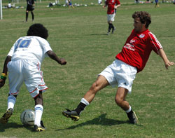

|
Misato, Sun 3rd Sept. It’s been more than half a century since a field witnessed so many Sudanese line up against the British, luckily this time, it was a football field, and a sporting event.
Lions had to do with a make shift team, that saw one striker play in goal, and the other at right-back due to losing players shortly before the game.
Lions also started without the ill but consistently influential captain, Gaafar Somi, who was one of a few shining players for Barbarians last season.
Lions started with four attacking players that average 19 years of age. The unpredictable danger man, AbuBakar Birkiya, well know by his ‘Afro’ hair, skimmed the bar with an unexpected strike from kick-off.
The game was finely balanced, until 2 quick goals in succession (latter from a penalty) gave BEFC a 2-0 lead.
Lions kept pushing, and 5 minutes before the interval, they were awarded a similar penalty to that of BEFC.
The 16-year old Omar Birkiya, took the penalty with confidence to slot home the Lions’ first TML goal, and to possibly become the youngest player to score in the TML.
The second half saw a few changes for both teams, with the most noticeable, being the Lions brining on the 190cm+ striker in Gassim Kowa to operate as a target man.
This kept BEFC on the back foot, and with 15 minutes gone into the second half, came the turning point. The referee, whom was excellent throughout the game, only booked the BEFC goalkeeper for smacking the Lions’ play-maker, Bashaar, in the face, when all bystanders agreed that it was a clear red card offence!
Somi could not stand by and watch Lions trail in a game that they at least deserve to draw, and so came on in the last 10 minutes. However, more bad luck struck the Lions, when they lost their centre-back, and were forced into a 3-5-2 formation. BEFC then started to push on, and eventually scored with the last stroke of the clock, to make the final score a flattering 3-1 to BEFC.
The match was more of a midfield battle with rare counter-attacks from both teams, but evidently Lions played the more attractive and attacking football with shots on goal from even their defence line!
The two central midfielders for Lions, Akira, and Baghir, controlled the midfield, and were strong contenders for Man of the Match, but Ken Hersche worked tirelessly on the right flank and all over the pitch, creating a few chances upfront, and helping out in defence.
Man of the Match: Ken Hersche.
Report – Hussein Shehata
|